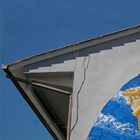
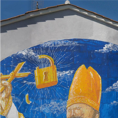
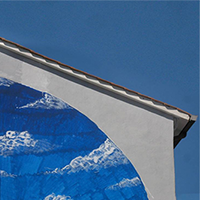
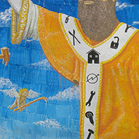
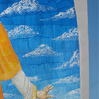
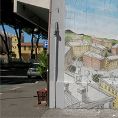
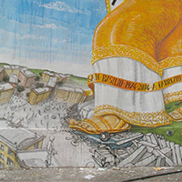
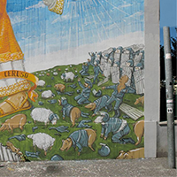

Wall-puzzle
Fabrizio Ceruso e la rivolta di classe
Fabrizio Ceruso era un ragazzo originario di Tivoli scomparso prematuramente a 19 anni durante la "rivolta di San Basilio" ed è a lui che è dedicato uno dei murales realizzati a San Basilio.
Realizzato nel 2014 -quarant'anni dopo l'accaduto- da "Blu", uno degli street artist italiani piú famosi al mondo, il murales di Via Recanati ritrae San Basilio che spezza lucchetti con le mani mentre con i piedi abbatte le barricate del quartiere; in basso possiamo notare i poliziotti che si trasformano in maiali e pecore mentre dall'altro lato il quartiere che resiste. Inoltre, all'altezza degli stinchi del Santo, possiamo notare una fascia con su scritto "San Basilio 1974-2014 A Fabrizio Ceruso".
Proprio per "oltraggio a un Corpo politico, amministrativo o giudiziario" è stato recentemente censurato e, in seguito, in parte cancellato.
A Fabrizio è stata anche dedicata una canzone intitolata "Rivolta di classe" curata dai "Comitati Autonomi Operai" e dal "Comitato Proletario F. Ceruso", a dimostrazione di quanto sia divenuto in quegli anni uno dei simboli della lotta di classe contro le istituzioni.
Il gioco
Ricomponi il puzzle aiutandoti con l'immagine: dopo aver cliccato su "Nuova partita" per mescolare i pezzi, muovili usando le frecce della tua tastiera! Comincia una nuova partita ogni volta che vuoi ma stai attento, il tassello eliminato non sará sempre lo stesso, buona fortuna!
|  |  |  |
 |
 |  |
|  |  |  |